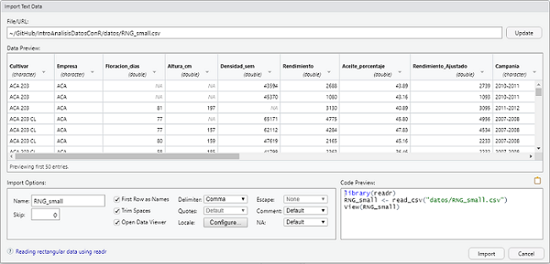
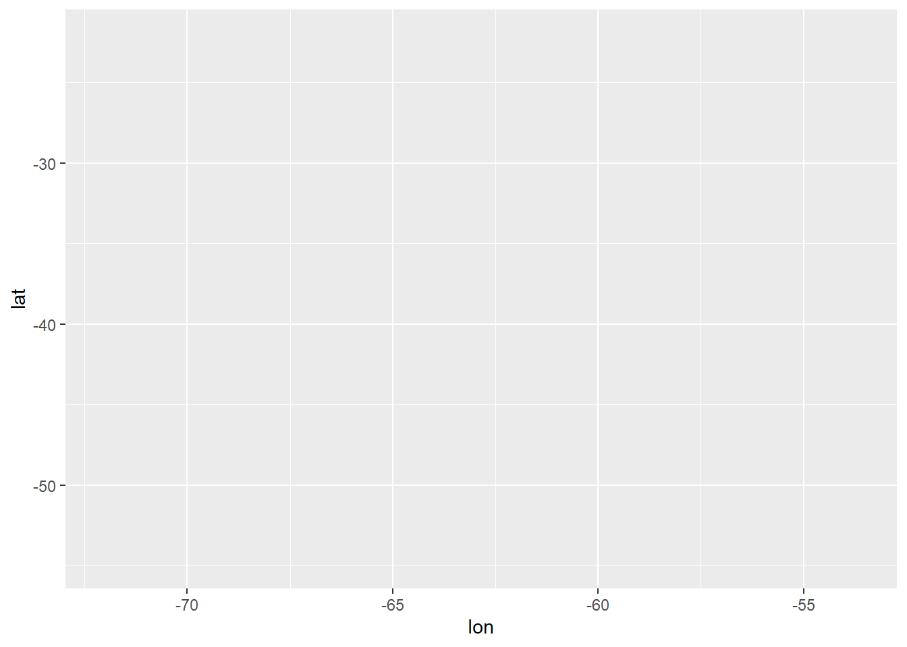
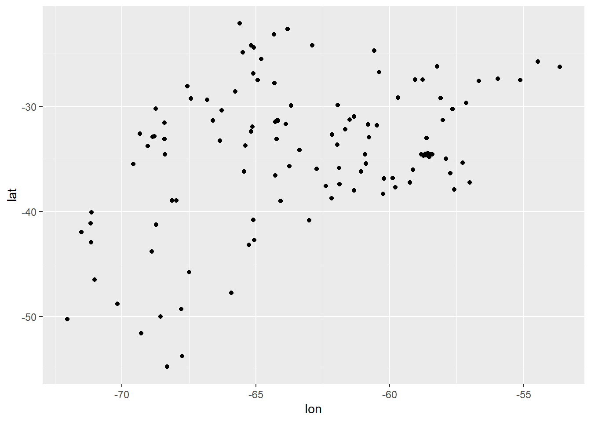
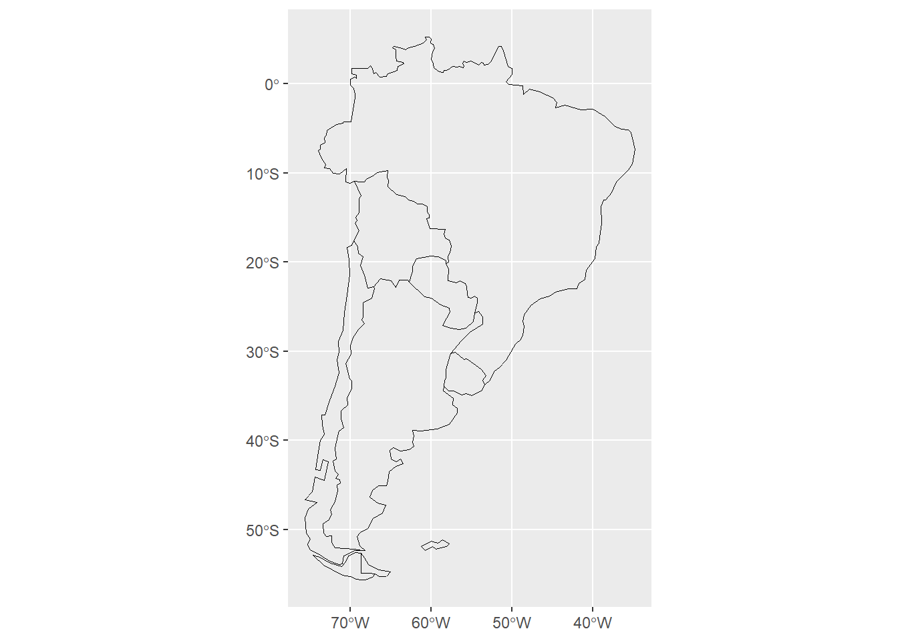
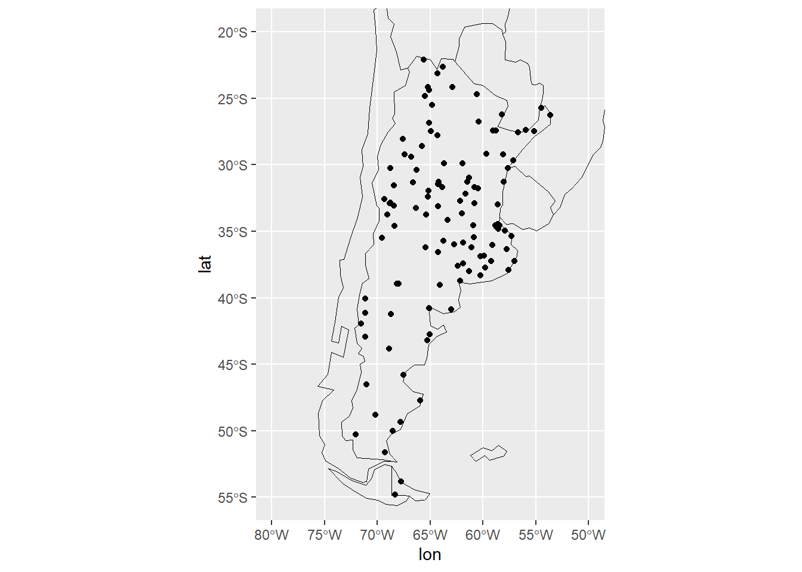

Ecosistema(s) espacial(es) de R
R tiene un ecosistema muy potente para poder realizar tareas de geocomputación, entre las que podemos mencionar:
- Análisis exploratorio de datos (EDA)
- Procesamiento de datos
- Transformación de datos (p. ej., cambio de proyección, cálculos)
- Visualización de datos (no solo por medio de mapas)
- Desarrollo de aplicaciones web
- Desarrollo de software, en forma de funciones o paquetes (por ejemplo, para compartir nuevos métodos)
El libro Geocomputación con R es una muy buena guía para ver en detalle muchas de estas tareas.
Hay muchas maneras de manejar datos geográficos en R, con muchos paquetes en el área. Entre ellos se encuentran:
- {sf}, {sp}, {terra}, {raster}, {stars} - clases espaciales
- {dplyr}, {rmapshaper} - procesamiento de tablas de atributos/geometrías
- {rnaturalearth}, {osmdata}, {rsat}, {MODISTools}- descarga de datos espaciales
- {rgrass}, {qgisprocess}, {rgee} - conexión con otros software de Sistemas de Información Geográfico
- {gstat}, {mlr3}, {CAST} - modelado de datos espaciales
- {rasterVis}, {tmap}, {ggplot2} - visualizaciones estáticas
- {leaflet}, {mapview}, {mapdeck} - visualizaciones interactivas
- {spatstat}, {spdep}, {spatialreg}, {dismo}, {landscapemetrics}, {RStoolbox}, {rayshader}, {gdalcubes}, {sfnetworks}, {metR} - diferentes tipos de análisis de datos espaciales
y muchos, muchos paquetes más.
En la vista Spatial de CRAN https://cran.r-project.org/view=Spatial se cuenta con una visión general de las diferentes tareas espaciales que se pueden resolver con R.
Tipos de datos
Para trabajar con datos especiales, en general, representamos la información de dos maneras:
Vectores: la realidad se representa utilizando puntos, líneas o polígonos.
Raster: la información se representa por medio de grillas o píxeles.
En R contamos con diferentes paquetes para poder trabajar con estos dos formatos. Vamos a ver unos ejemplos con datos vectoriales.
Datos vectoriales
Los datos vectoriales se pueden acceder como cualquier otro dato en R:
podemos leerlos desde un archivo en nuestra computadora.
podemos cargarlos con un paquete y utilizarlos.
Vamos a trabajar con ambos métodos.
Leyendo datos de un archivo
Existen muchas funciones distintas para leer datos dependiendo del formato en el que están guardados. Para datos tabulares, la forma más útil es el formato csv, que es un archivo de texto plano con datos separados por coma.
Para importar datos hace falta escribir el código correspondiente pero también podés aprovechar el entorno gráfico de RStudio:
File → Import Dataset → From Text (readr)…
Esto te va abrir una ventana donde podrás elegir el archivo a
importar (en este caso el archivo estaciones_smn.csv que
está dentro de la capeta datos del proyecto) y otros
detalles.

En la pantalla principal vas a poder previsualizar los datos. Abajo a
la izquierda tenés varias opciones: el nombre que vas a usar para la
variable (en este caso llamaremos estaciones_smn), si la
primera fila contiene los nombres de las columnas
(First Row as Names), qué delimitador tienen los datos (en
este caso comma, pero podría ser punto y coma u otro),
etc…
Y abajo a la derecha es el código que vas a necesitar para
efectivamente importar los datos. Podrías apretar el botón “Import” para
leer los datos pero si bien es posible, al mismo tiempo esas líneas de
código no se guardan en ningún lado y entonces nuestro trabajo luego no
se puede reproducir. Por eso, te proponemos que copies ese código,
cierres esa ventana con el botón “Cancel”, y pegues el código en el
archivo donde estés trabajando. Cuando lo ejecutes, se va a generar la
variable estaciones_smn con los datos.
library(readr)
estaciones_smn <- read_csv("datos/estaciones_smn.csv") ## Rows: 117 Columns: 5
## -- Column specification --------------------------------------------------------
## Delimiter: ","
## chr (2): nombre, provincia
## dbl (3): lon, lat, altua
##
## i Use `spec()` to retrieve the full column specification for this data.
## i Specify the column types or set `show_col_types = FALSE` to quiet this message.Nota: Notá que en este caso el código para leer los
datos consta de dos líneas. La primera carga el paquete
readr y el segundo usa la función
read_csv() (del paquete readr) para leer el archivo .csv.
No es necesario cargar el paquete cada vez que vas a leer un archivo,
pero asegurate de incluir esta línea en el primer bloque de código de tu
archivo.
Nota: La interfaz de usuario de RStudio sirve para autogenerar el código que lee el archivo. Una vez que lo tenés, no necesitás abrirla de nuevo.
Todo ese texto naranja/rojo es intimidante pero no te preocupes, es
sólo un mensaje que nos informa que los datos se leyeron y qué tipo de
dato tiene cada columna. Podemos explorar la estructura de la variable
estaciones_smn usando la función str() (de
structure en inglés).
str(estaciones_smn)## spec_tbl_df [117 x 5] (S3: spec_tbl_df/tbl_df/tbl/data.frame)
## $ nombre : chr [1:117] "AZUL AERO" "BAHIA BLANCA AERO" "BENITO JUAREZ AERO" "BOLIVAR AERO" ...
## $ provincia: chr [1:117] "BUENOS AIRES" "BUENOS AIRES" "BUENOS AIRES" "BUENOS AIRES" ...
## $ lon : num [1:117] -59.9 -62.2 -59.8 -61.1 -58.7 ...
## $ lat : num [1:117] -36.8 -38.7 -37.7 -36.2 -34.5 ...
## $ altua : num [1:117] 147 83 207 94 26 247 233 9 12 20 ...
## - attr(*, "spec")=
## .. cols(
## .. nombre = col_character(),
## .. provincia = col_character(),
## .. lon = col_double(),
## .. lat = col_double(),
## .. altua = col_double()
## .. )
## - attr(*, "problems")=<externalptr>Esto nos dice un montón. La primera línea dice que es una
tibble, que es un caso especial de la estructura de datos
tabular básica de R llamada data.frame. Tiene 117 filas
(las observaciones) y 5 columnas (o
variables que describen las observaciones). Las
siguientes líneas nos dicen los nombres de las columnas (nombre,
provincia, lon, lat, y altua), su tipo de dato (chr o
num), la longitud ([1:117]) y sus primeros elementos.
Podemos ver que esta tabla tiene dos variables que indican la latitud y longitud de cada fila. En este caso estamos ante un tipo de dato vectorial de puntos.
Para poder graficarlos vamos a utilizar el paquete {ggplot2} que permite generar gráficos de gran calidad en pocos pasos. Pero antes de graficar, veamos otra manera de leer datos vectoriales.
Usando un paquete: Natural Earth, datos del mundo.
{rnaturalearth} es un paquete de R para mantener y facilitar la interacción con los datos de los mapas vectoriales de la tierra natural un conjunto de datos cartográficos de dominio público que incluye vectores de países y otras fronteras administrativas.
Es muy útil para confeccionar mapas base, por ejemplo, para graficar
el mapa de Argentina y sus países limítrofes cargamos los datos con
ne_countries():
library(rnaturalearth)
mapa <- ne_countries(country = c("argentina", "chile", "uruguay",
"paraguay", "brazil", "bolivia",
"falkland islands"),
returnclass = "sf")El argumento country es un vector con los países que
necesitamos. El argumento returnclass hace referencia a la
estructura que queremos que devuelva. En este caso,
returnclass = "sf" hace que devuelva un objeto de clase
“Simple Features”. Este tipo de dato también se pueden graficar con
{ggplot2}.
Veamos el contenido de mapa
str(mapa)## Classes 'sf' and 'data.frame': 7 obs. of 64 variables:
## $ scalerank : int 1 1 1 1 1 1 1
## $ featurecla: chr "Admin-0 country" "Admin-0 country" "Admin-0 country" "Admin-0 country" ...
## $ labelrank : num 2 3 2 2 5 4 4
## $ sovereignt: chr "Argentina" "Bolivia" "Brazil" "Chile" ...
## $ sov_a3 : chr "ARG" "BOL" "BRA" "CHL" ...
## $ adm0_dif : num 0 0 0 0 1 0 0
## $ level : num 2 2 2 2 2 2 2
## $ type : chr "Sovereign country" "Sovereign country" "Sovereign country" "Sovereign country" ...
## $ admin : chr "Argentina" "Bolivia" "Brazil" "Chile" ...
## $ adm0_a3 : chr "ARG" "BOL" "BRA" "CHL" ...
## $ geou_dif : num 0 0 0 0 0 0 0
## $ geounit : chr "Argentina" "Bolivia" "Brazil" "Chile" ...
## $ gu_a3 : chr "ARG" "BOL" "BRA" "CHL" ...
## $ su_dif : num 0 0 0 0 0 0 0
## $ subunit : chr "Argentina" "Bolivia" "Brazil" "Chile" ...
## $ su_a3 : chr "ARG" "BOL" "BRA" "CHL" ...
## $ brk_diff : num 0 0 0 0 1 0 0
## $ name : chr "Argentina" "Bolivia" "Brazil" "Chile" ...
## $ name_long : chr "Argentina" "Bolivia" "Brazil" "Chile" ...
## $ brk_a3 : chr "ARG" "BOL" "BRA" "CHL" ...
## $ brk_name : chr "Argentina" "Bolivia" "Brazil" "Chile" ...
## $ brk_group : chr NA NA NA NA ...
## $ abbrev : chr "Arg." "Bolivia" "Brazil" "Chile" ...
## $ postal : chr "AR" "BO" "BR" "CL" ...
## $ formal_en : chr "Argentine Republic" "Plurinational State of Bolivia" "Federative Republic of Brazil" "Republic of Chile" ...
## $ formal_fr : chr NA NA NA NA ...
## $ note_adm0 : chr NA NA NA NA ...
## $ note_brk : chr NA NA NA NA ...
## $ name_sort : chr "Argentina" "Bolivia" "Brazil" "Chile" ...
## $ name_alt : chr NA NA NA NA ...
## $ mapcolor7 : num 3 1 5 5 6 6 1
## $ mapcolor8 : num 1 5 6 1 6 3 2
## $ mapcolor9 : num 3 2 5 5 6 6 2
## $ mapcolor13: num 13 3 7 9 3 2 10
## $ pop_est : num 4.09e+07 9.78e+06 1.99e+08 1.66e+07 3.14e+03 ...
## $ gdp_md_est: num 573900 43270 1993000 244500 105 ...
## $ pop_year : num NA NA NA NA NA NA NA
## $ lastcensus: num 2010 2001 2010 2002 NA ...
## $ gdp_year : num NA NA NA NA NA NA NA
## $ economy : chr "5. Emerging region: G20" "5. Emerging region: G20" "3. Emerging region: BRIC" "5. Emerging region: G20" ...
## $ income_grp: chr "3. Upper middle income" "4. Lower middle income" "3. Upper middle income" "3. Upper middle income" ...
## $ wikipedia : num NA NA NA NA NA NA NA
## $ fips_10 : chr NA NA NA NA ...
## $ iso_a2 : chr "AR" "BO" "BR" "CL" ...
## $ iso_a3 : chr "ARG" "BOL" "BRA" "CHL" ...
## $ iso_n3 : chr "032" "068" "076" "152" ...
## $ un_a3 : chr "032" "068" "076" "152" ...
## $ wb_a2 : chr "AR" "BO" "BR" "CL" ...
## $ wb_a3 : chr "ARG" "BOL" "BRA" "CHL" ...
## $ woe_id : num NA NA NA NA NA NA NA
## $ adm0_a3_is: chr "ARG" "BOL" "BRA" "CHL" ...
## $ adm0_a3_us: chr "ARG" "BOL" "BRA" "CHL" ...
## $ adm0_a3_un: num NA NA NA NA NA NA NA
## $ adm0_a3_wb: num NA NA NA NA NA NA NA
## $ continent : chr "South America" "South America" "South America" "South America" ...
## $ region_un : chr "Americas" "Americas" "Americas" "Americas" ...
## $ subregion : chr "South America" "South America" "South America" "South America" ...
## $ region_wb : chr "Latin America & Caribbean" "Latin America & Caribbean" "Latin America & Caribbean" "Latin America & Caribbean" ...
## $ name_len : num 9 7 6 5 12 8 7
## $ long_len : num 9 7 6 5 16 8 7
## $ abbrev_len: num 4 7 6 5 8 5 4
## $ tiny : num NA NA NA NA NA NA NA
## $ homepart : num 1 1 1 1 NA 1 1
## $ geometry :sfc_MULTIPOLYGON of length 7; first list element: List of 2
## ..$ :List of 1
## .. ..$ : num [1:11, 1:2] -65.5 -66.5 -67 -67.6 -68.6 ...
## ..$ :List of 1
## .. ..$ : num [1:110, 1:2] -65 -64.4 -64 -62.8 -62.7 ...
## ..- attr(*, "class")= chr [1:3] "XY" "MULTIPOLYGON" "sfg"
## - attr(*, "sf_column")= chr "geometry"
## - attr(*, "agr")= Factor w/ 3 levels "constant","aggregate",..: NA NA NA NA NA NA NA NA NA NA ...
## ..- attr(*, "names")= chr [1:63] "scalerank" "featurecla" "labelrank" "sovereignt" ...Vemos que tiene muchas más variables, hacia el final de los datos podemos ver que se indica que hay una clase “MULTIPOLYGON”
Graficando
Ahora si veamos como podemos generar un mapa con los puntos y los polígonos que obtuvimos en los pasos anteriors.
Cualquier gráfico de ggplot tendrá como mínimo 3 componentes: los datos, un sistema de coordenadas y una geometría (la representación visual de los datos) y se irá construyendo por capas.
Primera capa: el área del gráfico
La función principal de {ggplot2} es justamente ggplot()
que permite iniciar el gráfico y además definir las
características globales. El primer argumento de esta función
serán los datos que vas a visualizar, siempre en un data frame. En este
caso usamos estaciones_smn.
El segundo argumento se llama “mapping” (mapeo en inglés).
Este argumento define la relación entre cada columna del data frame y
los distintos parámetros gráficos. Por ejemplo, qué columna va a
representar el eje x, cuál va a ser el eje y, etc. Este mapeo se hace
siempre con la función aes() (que viene de
aesthetics, estética en inglés).
Por ejemplo, si queremos hacer un gráfico que muestre la ubicación de las estaciones usarías algo como esto:
library(ggplot2)
ggplot(data = estaciones_smn, mapping = aes(x = lon, y = lat))
Este código le indica a ggplot que genere un gráfico donde el eje
x se mapea a la columna lon y el eje
y, a la columna lat. Pero, como se ve,
esto sólo genera el área del gráfico y los ejes. Lo que falta es indicar
con qué geometrías representar los datos.
Segunda capa: geometrías
Para agregar geometrías que representen los datos lo que hay que
hacer es sumar el resultado de una función que devuelva una
capa de geometrías. Estas suelen ser funciones que empiezan con “geom_”
y luego el nombre de la geometría (en inglés). Para representar los
datos usando puntos, hay que uasr geom_point()
ggplot(data = estaciones_smn, mapping = aes(x = lon, y = lat)) +
geom_point() 
¡Nuestro primer gráfico!
Ahora veamos como se grafican los polígonos teniendo en cuenta lo que
aprendimos recien. Los datos de los polígonos están en mapa
y sabemos que es del tipo sf, asi que buscamos una geometría que nos
permita graficar ese tipo de datos, de esta manera:
ggplot(mapa) +
geom_sf()
Por defecto, el mapa se dibuja con un fondo gris, pero el problema es que ese fondo puede tapar los datos de puntos de las estaciones. Para para dibujar sólo los contornos hay que modificar la geometría un poco:
ggplot(mapa) +
geom_sf(fill = NA, color = "black", size = 0.2)
Ahora vamos a juntar los dos mapas: el de puntos y el de polígonos
ggplot(mapa) +
geom_sf(fill = NA, color = "black", size = 0.2) +
geom_point(data = estaciones_smn, mapping = aes(lon, lat)) 
Finalmente, podemos restringir el área del mapa para que se muestre solo donde hay datos:
ggplot(mapa) +
geom_sf(fill = NA, color = "black", size = 0.2) +
geom_point(data = estaciones_smn, mapping = aes(lon, lat)) +
coord_sf(ylim = c(-55, -20), xlim = c(-80, -50))
Desafío
Intentá replicar este mismo mapa pero con los datos que están en el archivo estaciones_siga.csv dentro de la carpeta datos del proyecto.